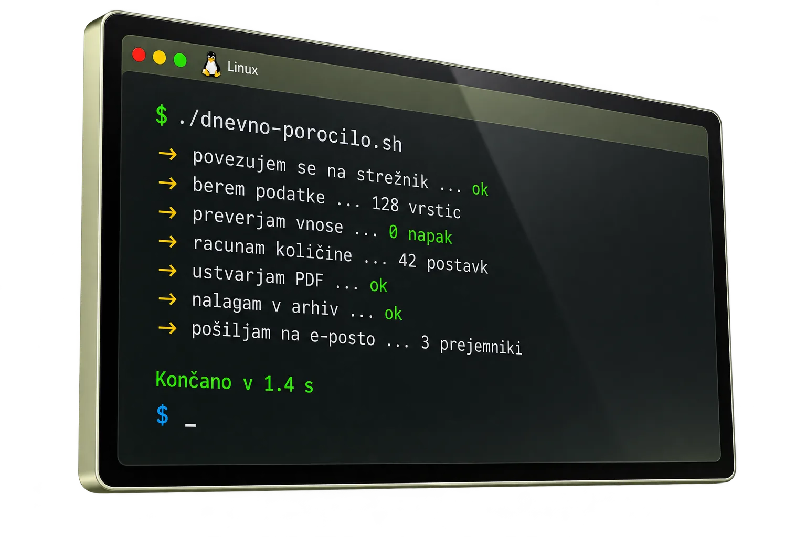

Domov / Skripte in avtomatizacija
Skripte in
avtomatizacija
vsakdanjega dela
Avtomatizacija ponavljajocih se opravil, obdelava podatkov in skripte po meri. Delo, ki ga clovek opravlja uro na dan, skripta konca v nekaj sekundah — brez napak in brez pozabljanja. Za podjetja v Ljubljani, po Sloveniji in sirse.

Kaj dobite
Manj rocnega dela
Vsak teden nekaj ur nazaj
Python · Bash
Delo, ki se ponavlja vsak dan, lahko opravi skripta. Tece sama, ob doloceni uri, ne da bi se je kdo spomnil.
- Tece ob doloceni uri
- Nikomur se ni treba spomniti
- Sporoci, ko konca
Kliknite za podrobnosti
Zakaj je to pomembno
Tece ob doloceni uri pomeni, da je porocilo pripravljeno, preden sedete za mizo, ne uro potem, ko se ga nekdo spomni.
Nikomur se ni treba spomniti pomeni, da opravilo ne odpade, ko je nekdo na dopustu ali bolniski.
Sporoci, ko konca pomeni, da dobite sporocilo, da je slo vse skozi — ali opozorilo, ce ni.
Podatki brez prepisovanja
Excel · CSV · PDF
Tabele, racuni in seznami se preberejo, preverijo in pretvorijo v datoteko, ki jo potrebujete — brez rocnega prepisovanja.
- Bere Excel, CSV in PDF
- Ujame napake in vrzeli
- Sestavi koncno porocilo
Kliknite za podrobnosti
Zakaj je to pomembno
Bere Excel, CSV in PDF pomeni, da delate naprej z datotekami, ki jih ze imate. Nicesar ni treba spreminjati.
Ujame napake in vrzeli pomeni, da manjkajoca stevilka ali napacen datum izplavata, preden gresta do stranke.
Sestavi koncno porocilo pomeni, da dobite datoteko, pripravljeno za poslji — ne kupa podatkov, ki jih morate urediti sami.
Vase in dela naprej
Linux · Windows
Skripta tece na vasem racunalniku ali streznika. Brez mesecne narocnine in brez podatkov, ki bi odhajali tretjim.
- Brez mesecne narocnine
- Podatki ostanejo pri vas
- Zraven so pisna navodila
Kliknite za podrobnosti
Zakaj je to pomembno
Brez mesecne narocnine pomeni, da placate enkrat. Gotova orodja zaracunavajo vsak mesec, vecno.
Podatki ostanejo pri vas pomeni, da vase stevilke in vase stranke nikoli ne potujejo na tuje streznike.
Zraven so pisna navodila pomeni, da jo lahko zazene kdorkoli v podjetju, ne le tisti, ki jo je narocil.
Cena
Cena avtomatizacije
Ena skripta
od 400 €
- Eno opravilo, od zacetka do konca
- Tece na vasem racunalniku
- Pisna navodila
Najpogosteje izbrano
Dnevni proces
900 – 2.500 €
- Vec korakov, povezanih skupaj
- Tece ob doloceni uri
- Porocilo po e-posti
- Podpora po predaji
Po meri
po dogovoru
- Povezava z vasimi sistemi
- Vecje kolicine podatkov
- Tece na vasem strezniku
Kaj se pri vas ponavlja vsak dan?
Povejte mi in vam povem, ali se splaca avtomatizirati. Odgovorim v enem delovnem dnevu.